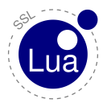

|  |
| Securing Lua Connections |
home · download · quickstart · references · index
LuaSSL is a Lua extension library that provides secure connections
over the TCP protocol. It is based on the free library OpenSSL, and
provides the security the Secure Socket Layer has to offer with a great
ease in its use.
The first goal of LuaSSL is to make available a simple implementation of the SSL to every Lua application which needs network security, authentication issues or simply some criptography. With LuaSSL, you won't need to master all the OpenSSL api to make secure connections over the internet.
The code is yet in an alpha stage, but it has been tested over Windows and Linux (other OS's are yet to be tested).
The library is available under the same terms and conditions as the Lua language, that is, it can be used at no cost for both academic and commercial purposes.
Author: Mauricio Oliveira Carneiro
As LuaSSL is a simplification of the OpenSSL API, there are some things that can't be done with LuaSSL. Here is a brief list of what LuaSSL can't do:
Some of these features were not implemented just for the sake of simplicity (multiple sessions and non-blocking I/O). The others are not intended to be in the LuaSSL package, since it's not a general crypto library like OpenSSL, it just handles the SSL connections part of OpenSSL. For the command line tool, you can use the OpenSSL one.
Comments and requests about what should be implemented are very welcome!
The first final version of LuaSSL has been released! A few bugs were corrected from the previous alpha version. The source code can be downloaded here:
luassl-1.0.zip (2006/11/09)Besides the full C and Lua source code for the library, the distribution contains some examples, this user's manual and the test procedures.
home · download · quickstart · references · index